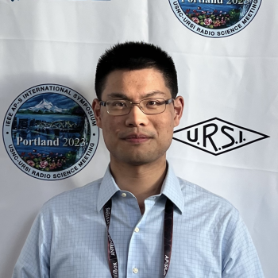

|
Yuyi Chang
This site is under heavy development. Please check back soon for new updates!
I'm a PhD student at the SENSE Lab with Prof. Emre Ertin in Department of Electrical and Computer Engineering, The Ohio State University. I am also part of the mDor Center.
Email /
Scholar /
Linkedin /
Github
|

|
Research
I'm interested in microwave imaging, LiDAR/Radar based motion tracking for mobile health applications.
- Microwave bio-imaging: developes AI driven RF based imaging system to enable early precise intervention of chronic dieases and affordable home care
- LiDAR/Radar motion tracking: design privacy-aware IoT systems.
|
- TA/guest lecturer for ECE 5013: Intro to Radar System
- TA/guest lecturer for ECE 5460: Image Processing
- Lab monitor for ECE 2050/2060: Sophomore lab series for digital signal processing/digital circuit
- TA for ENGR 1182: Fundamental of Engineering II
- First Place, CERF Three Minute Thesis Competition, 2024
- Most Innovative Award, First Annual CEGE Graduate Symposium, 2021
- Graduate Fellow, The Ohio State University, 2020
|
{kind=link}